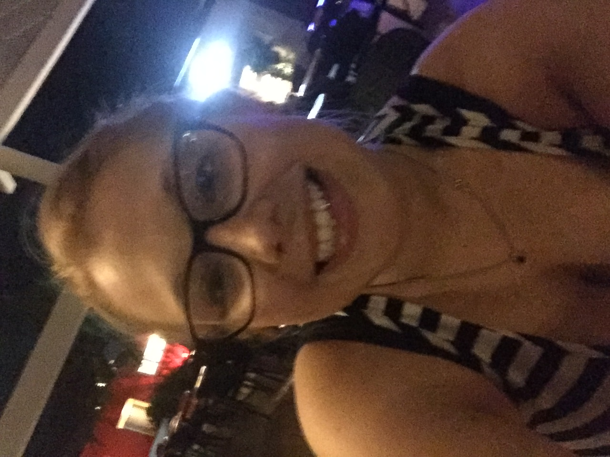

About Me
I attended Akron University for 3.5 years for Chemistry. I'm a certified pharmacy technician in the state of Ohio, and worked as one at Drugmart for 4 years. I've served, bar-tended and managed at 3 Palms in Hudson for the past 5 years. Also I have worked for Aramark for the past 10 years. During employment with Aramark, I worked at Blossom Music Center for 6 years and, currently, at The Quicken Loans Arena for the past 4 years. While I started as a server with Aramark, I now am in an administrative position in their money room.
Being that I’ve worked in so many industries, I’ve learned many valuable skills. I work very well with others. On team projects, I am able to communicate, organize, and lead everyone in right direction. I am a fast learner and have become someone who others ask for help or instruction. At the moment I am excelling in mysql database development, but am extremely interested in learning more back-end programming. I am always interested in learning something new.